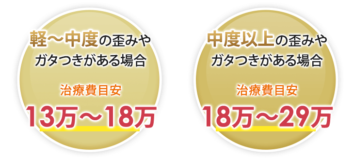

clearlineマウスピース矯正「クリアライン」16,500円で始められる！マウスピース矯正「クリアライン」
「クリアライン」で16,500円（税込）矯正治療を始めませんか？
「クリアライン」は透明のマウスピースを使用して歯並びを整える矯正治療です。「透明で目立たない」、「取り外しができて衛生的」、「同時にホワイトニングもできる」というメリットある「クリアライン」を、当院にお任せいただければ、グループ医院だからこその16,500円（税込）で始めることができます。仕事上ワイヤーが見えるのは困る、人に気づかれたくない、というお悩みをお持ちの方、価格のために矯正をあきらめていた方におすすめです。「クリアライン」できれいな口元を手に入れましょう。
「クリアライン」について
-
Point
0116,500円で始められてリーズナブル
※税込価格 -
Point
02治療期間は大体5か月～1年3か月 -
Point
03透明なので目立たない -
Point
04取り外せるので衛生面でも安心 -
Point
05製品の質が安定している -
Point
06同時にホワイトニングも
※ホワイトニング剤が最低1本ついてきます
デメリット
「クリアライン」は比較的軽度の歯並びの乱れを整えるのに適しています。見た目に影響を与える前歯12本に特化した矯正なので、大きく歯を動かさなければならないケースでは、「クリアライン」以外の治療法をおすすめする場合があります。またマウスピースをきちんと装着しないと治療期間が長くなってしまうので、装着時間が短くならないよう注意が必要です。
このような方に「クリアライン」をおすすめします
矯正は高いからとあきらめていた方
他の人に気づかれずに矯正を行いたい方
短い期間で治療を終えたい方
痛そうなワイヤー矯正に恐怖心がある方
ホワイトニングにも興味のある方
「クリアライン」とワイヤー矯正との違い
従来の矯正はワイヤーが目立つため治療をためらう方が多かったのですが、「クリアライン」は透明なマウスピースを使用するので、仕事上ワイヤーが目立つのは困る、他の人に気づかれるのは嫌だ、という方でも安心して治療を始めることができます。また「クリアライン」には、取り外しができる、16,500円（税込）で始められてさらにホワイトニングも一緒にできる、というメリットもあります。
| クリアライン | ワイヤー矯正 |
|---|---|
|
目安価格約8万～29万 初回16,500円（税込） 2回目以降27,500円（税込） |
約60万～90万 |
| 治療期間はおよそ5か月～1年3か月 | 約1～3年 |
| 透明で目立たない | 目立つ |
| 取り外せて衛生的 | 取り外しができない |
| 品質が安定している | 品質の差が出る |
| 痛みはほとんど感じない | 歯が動く時に痛みが強い |
※上記は自社調べです。治療期間には、個人差があります。
※目安価格は税別です。
「クリアライン」の治療費目安
「クリアライン」は患者様のお口の状態によって治療期間、費用に違いがでます。保険適用外で軽度の歪みなら8～13万、中度の歪みやガタつきでしたら13～18万、中度以上では18～29万円というのが大体の治療費の目安です。「中度以上の方でも29万円以内で治療できる」のはグループ医院だからこそできる価格です。

※上記はあくまでも目安です。目安価格は税別です。
※検査費33,000円、リテーナ代55,000円かかります。
「クリアライン」がこの価格を実現できた3つの理由
価格のせいで矯正をあきらめてほしくない、という強い願いから「クリアライン」が誕生しました。
リーズナブルな価格が実現できたのはグループ医院だからこそです。
1.原価ギリギリで価格を設定
矯正をあきらめてほしくない、多くの方にきれいな口元を手に入れてほしい、という気持ちから「クリアライン」は原価ギリギリで価格を設定しました。これはグループ医院だからこそできたことです。
2.見た目に影響を与える前歯12本に特化した矯正
「クリアライン」で動かすのは上の前歯6本、下の前歯6本の12本のみです。従来のワイヤー矯正では奥歯も動かしていたので、この点が大きく異なっています。動かす歯が少ないので、その分治療期間を短くすることができ、リーズナブルな価格に繋がっています。
3.無駄な工程を削減してコストをカット
「クリアライン」はマウスピースを使用するため、1人当たりの治療時間が短縮されました。そのため、歯科医師、衛生士の技術料などの人件費を大幅にカットすることが可能です。従来のワイヤー矯正は細かい作業が多く、手間がかかっていたので、その分の人件費を考えれば、「クリアライン」はかなりリーズナブルになっていると言えると思います。
「クリアライン」がこだわる治療効果
クリアラインは、優れた素材使用したり歯の種類ごとに合わせて1本ずつ調整するなど、治療効果にもしっかりこだわっています。そのため、自信をもって患者様におすすめできる治療法です。
歯を最大に動かす工夫
「クリアライン」は歯を最大に動かすために2つの工夫をしています。それが
①ひび割れに強い最高の素材を使用
②歯の種類ごとに合わせて1本ずつ調整
です。
計算に基づいて精確に歯を動かすことができ、フィット具合を修正する過程でも1本1本の歯を0.05ミリ単位で調整できます。
動かす歯を限定して治療期間を短縮
従来のワイヤー矯正では前歯だけでなく固定源となる奥歯も動かすので治療期間が長くなりますが、「クリアライン」が動かすのは上の前歯6本と下の前歯6本のみ。見た目に影響を与える歯だけを動かすことで治療期間を短くすることができます。
治療の流れと価格
「クリアライン」の特徴は、医師と相談して、患者様が満足したタイミングで治療を終えることができる点です。「思っていたよりも高くなってしまった」ということがないので、安心して矯正治療を受けていただけます。
治療の流れ
- Step 01無料カウンセリング
-
カウンセリングを行って患者様に納得していただいたら治療をスタートします。お口の型取りをしてオーダーメイドでマウスピースを作製します。
- Step 02マウスピース装着
-
専用のマウスピースを2種類お渡しするので、装着してください。調整のため、月に1回来院していただきます。
- Step 03治療終了
-
医師と相談の上、患者様が満足したタイミングで治療終了となります。
料金表
| クリアライン初回 | 2回目以降 | リテーナー(1回) | 矯正検査料(1回) | カウンセリング | ホームホワイトニング（1回分） | 調整料(調整毎) | |
|---|---|---|---|---|---|---|---|
| 片顎 | 16,500円 | 27,500円 | 16,500円 | 33,000円 | 無料 | 無料 | 無料 |
| 両顎 | 19,800円 | 38,500円 | 27,500円 | 33,000円 | 無料 | 無料 | 無料 |
※税込み価格となります。
「クリアライン」ならぜひ当院にお任せください
～グループ医院だからこその価格でこだわりの治療を～
矯正治療はどうしても高額になってしまいがちですが、当院ではグループ医院だからこそできる原価ギリギリのリーズナブルな価格で「クリアライン」を提供しています。
歯並びでお悩みの方、あきらめる必要はありません。ぜひ当院にご相談ください。
| 当院 | 他院 | 差額 | |
|---|---|---|---|
| 初回 |
片顎 16,500円 両顎 19,800円 |
22,000円 | 最大-5,500円 |
| 2回目以降 |
片顎 27,500円 両顎 38,500円 |
44,000円 | 最大-16,500円 |
| 5回 |
片顎 129,800円 両顎 173,800円 |
198,000円 | 最大-68,200円 |
| 8回 |
片顎 212,300円 両顎 289,300円 |
330,000円 | 最大-117,700円 |
※税込み価格となります。
クリアラインの無料サービス
当院では患者様のご負担を軽減するために、次の3つのことを無料サービスにてご提供しています。

カウンセリング
費用や治療法、期間など、矯正治療についてわからないことはありませんか？ 当院ではカウンセリングを無料にて行っています。何でもご相談ください。
ホームホワイトニング無料
当院では矯正治療の期間中に、Googleの口コミ書いていただいた方にはホームホワイトニング一本プレゼントしております。マウスピース型矯正は治療中に、それ以外の治療法については保定期間に行います。
「クリアライン」以外の矯正治療にも対応しています
まずカウンセリングで患者様のお口の様子を見せていただき、「クリアライン」では対応できない場合や「クリアライン」以外の治療方法が適していると判断した場合は、患者様に最も適した方法をご案内いたします。治療法のメリット、デメリットをしっかりお伝えしますので、不安や点や質問があればどんなことでもお訊ねください。患者様に納得していただいてから治療を始めます。